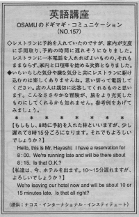

少し遅れます。
We're running late When you are going to be late for a reservation, it's good to let them know. Most places will keep your reservation but some very busy ones may not. They might switch you to a later reservation.
レストランに予約を入れていたのですが支度に手間取り、予約の時間に遅れそうになりました。レストランに一本電話を入れればよいものの、それもままならず、家内と口喧嘩を始めることとなりました。
いらいらした気分や嫌な気分でレストランに駆け込むのは楽しくありませんね。思い切って電話してください。店の人は親切に応答してくれるものと思います。こんなささやかな冒険が、旅をより充実したものにしてくれるかも知れません。参考例をあげてみましょう。
もしもし、８時に予約を入れた林といいますが、
少し遅れて８時１５分頃になります。よろしいでしょうか？
Hello, this is Mr. Hayashi. I have a reservation for 8:00.
We're running late and will be there about 8:15. Is that O.K.?
今、ホテルを出ます。１０～１５分遅れます。
よろしいでしょうか？
We're leaving our hotel now and will be about 10 or 15 minutes late.
Is that all right?

| © 1995-2013 NACOS International Institute. All Rights Reserved. |